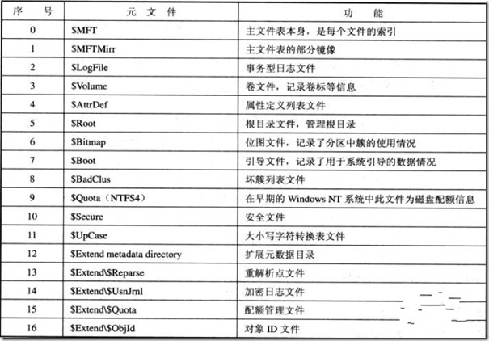

第1节：NTFS文件系统的结构
当用户将硬盘的一个分区格式化为NTFS分区时，就建立了一个NTFS文件系统。NTFS文件系统同FAT32文件系统一样，也是用“簇”为存储单位，一个文件总是占用一个或多个簇。
NTFS文件系统使用逻辑簇号（LCN）和虚拟簇号（VCN）对分区进行管理。
逻辑簇号：既对分区内的第一个簇到最后一个簇进行编号，NTFS使用逻辑簇号对簇进行定位。
虚拟簇号：既将文件所占用的簇从开头到尾进行编号的，虚拟簇号不要求在物理上是连续的。
NTFS文件系统一共由16个“元文件”构成，它们是在分区格式化时写入到硬盘的隐藏文件（以”$”开头），也是NTFS文件系统的系统信息。
所以NTFS文件格式的磁盘及时不存储任何数据，也会被占用一部分存储空间（大约12%），如下图是一个空闲的磁盘的存储空间占用情况。
NTFS的16个元文件介绍：
